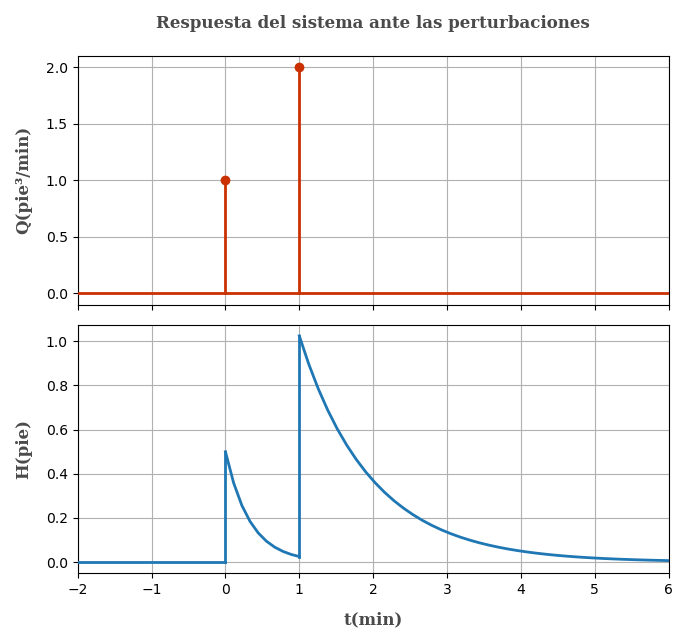

7 Respuesta de un tanque a una perturbación tipo impulso unitario
Problema P5.9 (Process Control - Coughanowr)

El nivel del líquido del proceso mostrado en la figura opera en estado estacionario, entonces una perturbación ocurre. A t = 0,la cantidad de 1 pie³ de agua es añadida al tanque de manera repentina (impulso unitario); a t = 1min, son añadidos 2 pie³ de agua de manera repentina también. Dibuje al respuesta del nivel en el tanque (h) vs el tiempo (t), y determine el nivel en los tiempos t = 0.5, 1.0 y 1.5 minutos. \begin{array}{l} Datos\\ \tau = 1\text{ min}\\ R = 0.5\\ q_s = 10\space pie³/min \end{array}
Obtención de la ecuación en transferencia
Sea q el caudal, h el nivel del líquido
Escribiendo las ecuaciones de balance volumétrico q - q_0 = \frac{dV}{dt}
Pero q_0 = h/R y dV = Adh
q- \frac{h}{R} = A\frac{dh}{dt} \space\space\space\space (1)
Escribiendo el balance en estado estacionario
q_s- \frac{h_s}{R} = 0 \space\space\space\space (2)
Restando (1) con (2) para obtener las variables desviación y recordando que dh=d(h-h_s), por ser h_s constante.
q-q_s-\frac{h-h_s}{R}=A\frac{d(h-h_s)}{dt}
Q - \frac{H}{R} = A\frac{dH}{dt}
Aplicando la tranformada de Laplacey sabiendo que H(t=0)= h-h_s=h_s-h_s=0
Q(s) - \frac{H(s)}{R} = A\left[sH(s)-H(t=0)\right]\\ \\ Q(s) - \frac{H(s)}{R} = AsH(s)
Despejando y sabiendo que \tau=AR
\frac{H(s)}{Q(s)}=\frac{R}{ARs+1}
\frac{H(s)}{Q(s)}=\frac{R}{\tau s+1}
Reemplazando los valores \tau = 1 y R=0.5
\frac{H(s)}{Q(s)}=\frac{0.5}{s+1} \space\space\space\space (3)\\
Descripción de la perturbación
La perturbación sólo va a afectar el caudal de ingreso, esta puede ser representado por la variable desviación Q(t). Para diferenciar el impulso unitario se pondrá el simbolo de \infty al lado del valor de la perturbación.
Q(t)= \begin{cases} 0 &\text{si } t < 0 \\ 1 \space\ pie³/min\space \space\space(\infty) &\text{si } t=0\\ 0 \space\ &\text{si } t>0\\ 2 \space\ pie³/min\space\space\space (\infty) &\text{si } t=1 min\\ \end{cases}
Expresando la misma función con impulsos unitarios y aplicando la transformada de Laplace
\begin{array}{l} Q(t) = 1 \cdot \delta (t) + 2 \cdot \delta (t-1) \space\space\space\space //L\{\space\}\\ Q(s) = 1 + 2\cdot e^{-s}\cdot L\{ \delta (t) \}\\ Q(s) = 1 + 2 \cdot e^{-s} \end{array}
Reemplazando la expresión anterior en la ecuación (3)
\begin{array}{l} H(s)= Q(s)\cdot \frac{0.5}{s+1} \\ \\ H(s) = \left(1+2e^{-s}\right)\frac{0.5}{s+1}\\ \end{array}
Despejando y aplicando la antitransformada L^{-1}\{\space\} Recuerde que la expresión e^{-as} crea un desfase de tiempo en la antitranformada igual a t-a, también L^{-1}\{\frac{1}{s+k}\}= e^{-kt}
H(s) = \frac{0.5}{s+1}+\frac{e^{-s}}{s+1}\\
\begin{array}{l} H(t) = 0.5\cdot e^{-t} \cdot u(t)+ e^{-t}\cdot u(t) |_{t=t-1}\\ \\ H(t) = 0.5\cdot e^{-t}\cdot u(t) + e^{-(t-1)} \cdot u(t-1) \end{array}
Notese que normalmente se omite el término u(t) en la antitransformada, pero en este caso es necesario ponerlo para aclarar los dominios
Escribiendo nuestra ecuación de manera más entendible
H(t)= \begin{cases} 0.5\cdot e^{-t} &\text{si }\space 0 < t < 1\\ 0.5\cdot e^{-t} + e^{-(t-1)} &\text{si } \space t>1\\ \end{cases} \space\space\space\space\space \textbf {(4)}
Con las funciones ya determinadas podemos graficarlas.

Del enunciado nos piden calcular las el valor de h(t=0.5), h(t=1) y h(t=1.5)
Recuerde que H = h-h_s por que lo que h=H+h_s
Determinado h_s de la ecuación del estado estacionario
q_s- \frac{h_s}{R} = 0\\ \\ h_s = q_s \cdot R = 10\cdot 0.5 = 5 pie
Usando la ecuación (4) para hallar lo solicitado
\begin{array}{l} h(t=0.5) = H(t=0.5)+5\\ \\ \mathbf{h(t=0.5) = 0.5\cdot e^{-0.5} + 5 = 5.3033\text{ pie}} \end{array}
Para cuando t = 1 min nuestra función matemática no esta definida (los puntos en la gŕafica son punteagudos y hay una pendiente infinita) pero si la tenemos definida antes y despues de la perturbación, teniendo eso en cuenta y sabiendo que nuestro modelo es una aproximación del fenómeno, indicamos que la altura inmediatamente antes de la perturbación a t = 1 min es:
h(t=1)= 0.5\cdot e^{-1} + 5\\
\mathbf{h(t=1)=5.1839\text{ pie}}
E inmediatamente después de la perturbación a 1 minuto
h(t=1)= 0.5\cdot e^{-(1-1)}+e^{-1} + 5\\
\mathbf{h(t=1) = 6.1839\text{ pie}}
A t = 1.5 min
h(t=1.5)= 0.5\cdot e^{-1.5} + e^{-(1.5-1)} + 5\\
\mathbf{h(t=1.5)= 5.7181\text{ pie}}\\
Para completar el ejercicio, grafiquemos el nivel del líquido en el tiempo (h vs t)
La grafíca es similar a la gráfica de H(t) vs t, con la diferencia de que esta desplazado en el eje de las ordenadas.
Referencias
- Coughanowr, D. R.; LeBlanc, S. E. (2009). Process Systems Analysis and Control (3rd edition). McGraw-Hill. ISBN 978-0-07-339789-4.